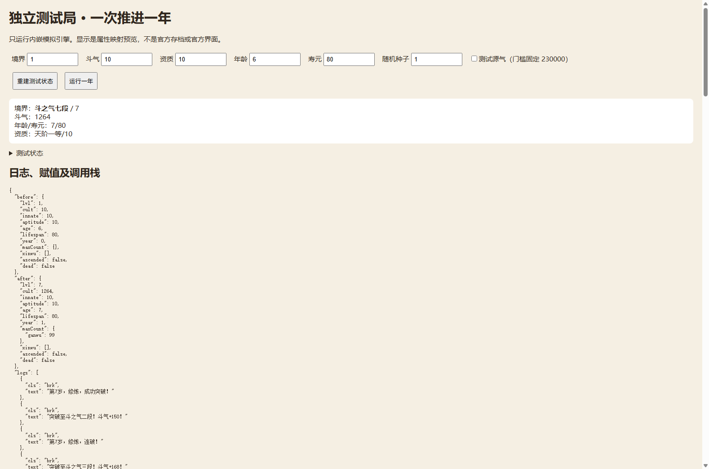

Hello
PERSONAL LAB / DIGITAL GARDEN
一个用来保存好奇心的地方。用代码、AI 和 Agent，把问题继续追下去。
01 / FOLLOW THE QUESTIONS
从一个小游戏，到一条工作流，再到一次值得反复练习的对决。
拖动节点，或者点一个实验。

Aeneas 是我在网上使用的名字。我更习惯通过真的做点什么，来搞懂自己还不会的东西。
这里保存实验、笔记和还没回答的问题。可以从上方 Lab、Garden 进入完整内容。
完善个人网站，学习 Codex、Agent 与 Git 工作流，探索个人 AI 工具与长期方向。
chat-style-distillation · codex-reconnect-debug · github-pages-learning
DOUPO-ANALYSIS / OPEN THE EXPERIMENT ↗
A FIELD NOTE / GROWING